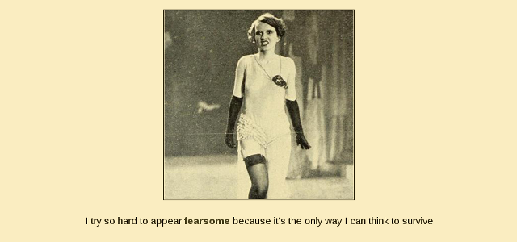

latest

Feminine Aspect, my latest Twine work, is now available via the Wellcome Collection~
also I was very annoyed by the Supreme Court refusing to hear Oracle v. Google so I made a bot that takes stuff from the Java API and swaps out as many words as possible for synonyms
also also I have a new website now (hi). I still have to add stuff and it's prolly broken in a bunch of places but it says "under construction" at the bottom so it's against the law to criticize me for it